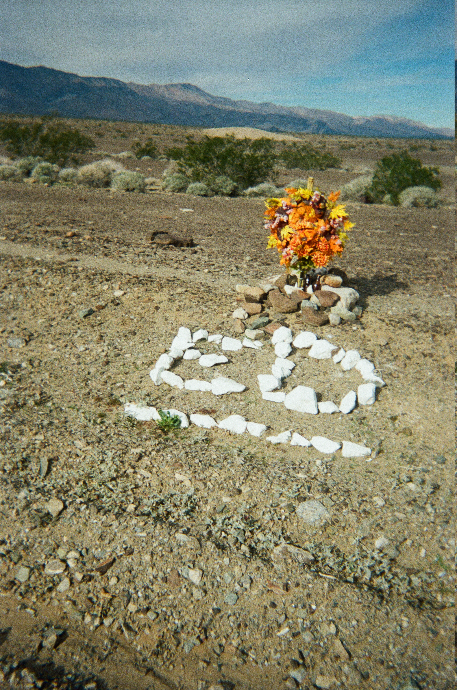

A desert shrine somewhere off the highway.
While driving it appeared as a flash of yellow. What could that be?
In the desolate badlands of the Mojave desert, any trace of humanity seems miraculous. I turn the car around and drive back.
It’s a shrine for someone named Ed.
There is a bouquet of flowers, and several unopened bottles of beer nestled between the rocks. I leave one from the 6-pack I bought the night before. It seems only right.
The wind was calm that day. Eventually it will turn violent, blowing hot dust and sand across the valley, biting at the monument.
For now there is peace. There is me, saying a prayer as I gaze at the bottles of Pacifico. Or was it Corona? The moment is already slipping away.